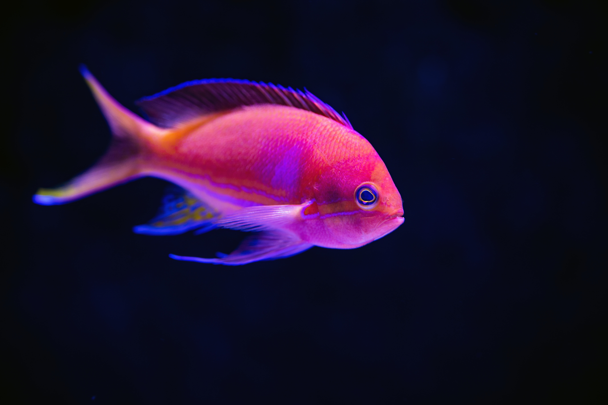

STAR FISH
Starfish or sea stars are star-shaped echinoderms belonging to the class Asteroidea.
Common usage frequently finds these names being also applied to ophiuroids, which are correctly referred
to as brittle stars or basket stars. Starfish are also known as asteroids due to being in the class
Asteroidea.
CLOWN FISH
Nemo and his dad, Marlin, are ocellaris clownfish, also called false clownfish or
clown anemonefish. Anemonefish are so-named for the sea anemones in which they make their homes. There
are 28 species of anemonefish, and they come in many colors, such as pink, red, yellow, black, brown and
multi-colored stripes.
PINK FISH
Pink fish is a general term used to describe fish such as salmon and sea trout that
have pink flesh (though not all salmon have pink flesh.) Some people also categorize some catfish and
red snapper as a pink fish, as the flesh of some varieties turns pink when cooked.
